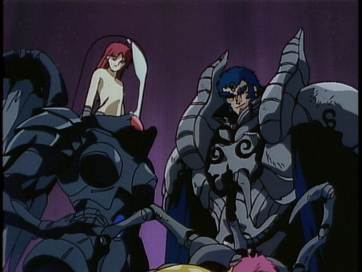

Disclaimer: This review covers the 1994 series "New Cutie Honey," also known as "Shin Cutie Honey." Despite commonly being listed with a runtime of 240 minutes, the actual runtime on the Discotek Bluray disc (perhaps due to opening/ending cuts) is closer to 210 minutes."Cutie Honey" is a older classic anime character by Go Nagai, also known for the franchises "Devilman" and "Mazinger." I was interested in the new license rescue by Discotek of the series "New Cutie Honey," although after further research online, I realize it isn't necessarily the best series to watch for the character, especially as an entry point. But most of the spin-off entries never did get a proper release outside of Japan, so your choices are limited.If you've never heard of the character, you might want to do some research before watching or reading her content. While Go Nagai's characters were adapted into child-friendly series many decades ago, but he is a polarizing creator that tended to make works for adult audiences. A magically-transforming hero named "Cutie Honey" sounds like a fun Japanese version of "Wonder Woman," a pioneer in the magical-girl anime genre for shows like "Sailor Moon," complete with an awkwardly-stupid hero name. But "New Cutie Honey" relishes in nudity and violence: when Honey transforms, her clothes explode, revealing nipples and all in an elaborately-animated transition (freeze frame to even get a glimpse of her groin with more detail than any non-hentai anime would dare), before finishing with her skin-tight pink uniform. And in fight scenes, enemies use guns and claws to tear through a large body count, transforming into grotesque monsters before their limbs or heads are cut off. "New Cutie Honey" is certainly NOT for children.... And yet, it would be easy to edit the show to better target a younger audience. The show has the classic character theme song, a bouncing tune that could stand alongside the classic "Here Comes the Spider-man" tune. Many side characters are designed to look like cartoons, including a grandfather-cyborg figure that's about two feet tall, with buck teeth and a large nose-hair mustache. Even in its more serious moments, in never has more depth than the typical episode of "Pokemon" or "DragonBall Z." So who exactly is "New Cutie Honey" for? I think it was really meant for adult men who never properly grew up: for better or for worse, that's the stereotype that otaku audiences are expected to be made up of, and this show futher strengthens that false judgement. In my case, I AM a adult man who never properly grew up. So while I rolled my eyes a fair amount, and while the pacing of the show doesn't age perfectly, I had a good time. "New Cutie Honey" is fun, if nothing else.It's hard to really explain the plot, if you could even call it a plot. The eight-episode series is set in a future-version of Japan, apparently as a sequel to the original series (perhaps allowing it to not replace the original classic show). Certain characters are introduced as if the audience would already recognize them (some are made to be cyborgs to explain their long lifespan). The city is awash with crime, and the mayor works hard to clean up the city, with his secretary by her side. An old character recognizes the character as the legendary "Cutie Honey," and after getting caught in the middle of a crime, the secretary "awakens" and transforms: yes, she is none other than the legendary hero "Cutie Honey," and she's ready to get to work! Joining her are the aforementioned cyborg-granpa, an active mother and father thief-couple, and their son, Chokkei (who despite being brave, is the only one who can barely put up a fight, acting only as a love-interest to Cutie).  There is a larger plot involving the over-arching villain, but that gets resolved by the fourth episode (a neat and tidy ending, such that the remaining four episodes feel like bonus epilogue stories). Each episode presents a new enemy-of-the-week, with Cutie disguising herself to spy on their bad behavior. Aside from strength or power, Cutie's main power is to transform into virtually any costume (and even change her body, if necessary). At the end of each episode, she exclaims her catchphrase: "Sometimes, I'm a secretary... Sometimes, I'm a police officer... Sometimes, I'm an Olypmic pool diver... (make up any three professions you like)... But the truth is, I'm CUTIE HONEY, hero of love and justice!" Then the enemy transforms into a demonic monster (?!), they fight, Cutie wins, rolls credts for the next episode.Every transformation has her excalim "Honey Flash!" with a knowing wink, with a custom 5-10 second sequence of her nude body being magically clothed. The story doesn't really matter, and for the comedic/sexy tone it's going for, that might be for the best. There are a few contradicting traits (like Honey suddenly being embarresed to change in front of her team in the middle of a fight, when she had already done it several times before). The enemies themselves are also mostly women, also barely dressed... officially, the show was too racy to be broadcast, so it was released as an OVA. Aside from in-franchise cameos, we also get the odd reference to Go Nagai's other franchises: I was proud to recognize a very tongue-in-cheek refernce to "Devilman" in episode 7.This isn't a hentai short-series, but the story and tone feel in-line with that type of experience. That's not necessarily a bad thing, but it's important to adjust your expectations accordingly.While the art is dated (and I never particularly liked Go Nagai's character designs anyway), the animation holds up surprisingly well. Yes, classic shortcuts from cel-anime are rampant, but the animation is surprisingly fluid and detailed for large parts of each episode (naturally for the important scenes, like the nude-transitions and fights). I'd go so far to say if you are a fan of animation and are looking for good examples of it in Japanese anime pre-1999, this should be on your watch list. Modern fans for action and fanservice will be happy, despite the show's age. The old English dub is dated, but also holds up surprisingly well thanks to the actors' enthusiasm and use of foul language (apparently, the English voice for Honey was hand-picked by Go Nagai himself). The soundtrack is... ok, but only the opening theme song really stood out to me (sung in both Japanese and English across the series, which was a treat)."New Cutie Honey" is hardly a classic series, but it was entertaining enough for me to understand how "Cutie Honey" herself could be seen as a classic character. I'm personally just not a fan of Go Nagai's work, but even I could appreciate the character with this. Discotek's release has an impressive set of bonus features, from old Japanese interviews and a subtitled-audio drama. From the female cast's interview, I get the sense that this was a fun series for all genders, both for the strength of its women and its sexiness. It's not my place to give an opinion on the matter, but I'll just say the show is fun, and if you are feeling adventurous, it's not a bad way to spend a few hours.
- "Ani" More reviews can be found at : https://2danicritic.github.io/ Previous review: review_Nerdland Next review: review_Nichijou